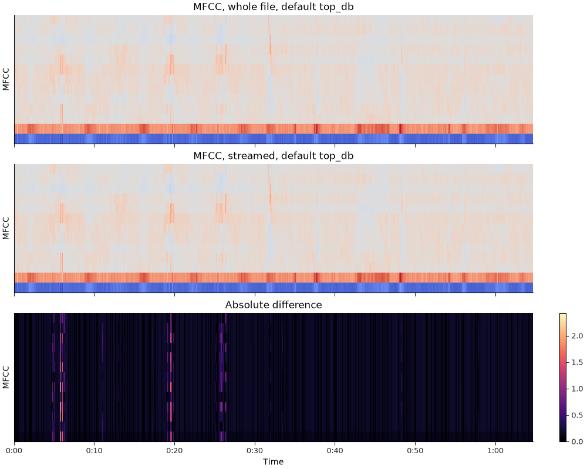

Note
Go to the end to download the full example code.
MFCC Streaming#
This notebook demonstrates how to compute MFCCs incrementally on a stream of
audio, and why the ref and top_db parameters matter when you do.
librosa.feature.mfcc converts the mel spectrogram to decibels with
librosa.power_to_db. That conversion has two places where a value can be
reduced over the input, and each one couples a frame to the rest of the array
it arrived in:
ref, when it is a callable such as np.max, is evaluated over the frequency and time axes.top_db, when it is notNone, thresholds the output attop_dbbelow the maximum over those same axes.
librosa.feature.mfcc defaults to ref=1.0, a fixed scalar, so in the
default configuration top_db is the one that binds. When you process a
whole file at once the threshold is set by the loudest moment in the file;
when you process the same audio block by block, each block is thresholded
against its own loudest moment.
The consequence is that MFCCs computed on a stream do not match MFCCs computed
on the whole file, and neither is a function of the individual frame. Passing
top_db=None removes that coupling and makes the computation frame-local,
which is what you want when the features must not depend on their context.
Passing a callable ref puts the coupling back, deliberately.
We’ll need numpy and matplotlib for this example
import numpy as np
import matplotlib.pyplot as plt
from IPython.display import HTML
import librosa
We’ll use a recording with a wide dynamic range, so that the loud passages sit far enough above the quiet ones for the threshold to engage.
filename = librosa.ex("humpback")
HTML(librosa.util.example_info("humpback", html=True))
Set up the block reader. center=False is important here: it keeps
each block’s frames aligned with the frames of the whole-file
computation, so the two are directly comparable.
n_fft = 2048
hop_length = 512
n_mfcc = 13
sr = 22050
def streamed_mfcc(**kwargs):
"""Compute MFCCs block by block and concatenate along time."""
stream = librosa.stream(
filename,
block_length=16,
frame_length=n_fft,
hop_length=hop_length,
sr=sr,
mono=True,
fill_value=0,
)
blocks = [
librosa.feature.mfcc(
y=y_block,
sr=sr,
n_mfcc=n_mfcc,
n_fft=n_fft,
hop_length=hop_length,
center=False,
**kwargs,
)
for y_block in stream
]
return np.hstack(blocks)
For comparison, load the whole file and compute the MFCCs in one pass.
y, sr = librosa.load(filename, sr=sr)
whole_default = librosa.feature.mfcc(
y=y, sr=sr, n_mfcc=n_mfcc, n_fft=n_fft, hop_length=hop_length, center=False
)
stream_default = streamed_mfcc()
With the default top_db=80, the two disagree. Each block was
thresholded against its own loudest frame rather than against the
loudest frame in the file.
n = min(whole_default.shape[-1], stream_default.shape[-1])
default_error = np.max(np.abs(whole_default[..., :n] - stream_default[..., :n]))
print(f"default top_db=80: max difference = {default_error:.4g}")
default top_db=80: max difference = 2.428
Passing top_db=None removes the threshold. Now every frame is
computed from its own samples alone, so the streamed result matches
the whole-file result to floating point precision.
whole_none = librosa.feature.mfcc(
y=y, sr=sr, n_mfcc=n_mfcc, n_fft=n_fft, hop_length=hop_length,
center=False, top_db=None,
)
stream_none = streamed_mfcc(top_db=None)
n = min(whole_none.shape[-1], stream_none.shape[-1])
none_error = np.max(np.abs(whole_none[..., :n] - stream_none[..., :n]))
print(f"top_db=None: max difference = {none_error:.4g}")
top_db=None: max difference = 0
top_db is not the only way to couple a frame to its context. The
reference value is the other one. ref defaults to the scalar 1.0,
which is why disabling top_db above was sufficient; passing a callable
such as np.max reduces over the same axes and reintroduces exactly the
same disagreement, with the threshold still switched off.
whole_refmax = librosa.feature.mfcc(
y=y, sr=sr, n_mfcc=n_mfcc, n_fft=n_fft, hop_length=hop_length,
center=False, top_db=None, ref=np.max,
)
stream_refmax = streamed_mfcc(top_db=None, ref=np.max)
n = min(whole_refmax.shape[-1], stream_refmax.shape[-1])
refmax_error = np.max(np.abs(whole_refmax[..., :n] - stream_refmax[..., :n]))
print(f"top_db=None, ref=np.max: max difference = {refmax_error:.4g}")
top_db=None, ref=np.max: max difference = 19.5
So the two parameters have to be considered together. A frame-local
computation needs a scalar ref and top_db=None; setting either
one alone leaves the other free to reintroduce the dependence.
Plotting the difference makes the structure visible. The error is not spread evenly: it appears wherever a block’s own peak differs from the peak of the whole file, so it shows up as sharp bands at the block boundaries on either side of a loud event. Frames inside a block that contains a loud passage are thresholded against that passage; the same frames in a block without one are not.
fig, ax = plt.subplots(nrows=3, sharex=True, figsize=(10, 8))
librosa.display.specshow(
whole_default[..., :n], x_axis="time", sr=sr, hop_length=hop_length, ax=ax[0]
)
ax[0].set(title="MFCC, whole file, default top_db", ylabel="MFCC")
ax[0].label_outer()
librosa.display.specshow(
stream_default[..., :n], x_axis="time", sr=sr, hop_length=hop_length, ax=ax[1]
)
ax[1].set(title="MFCC, streamed, default top_db", ylabel="MFCC")
ax[1].label_outer()
img = librosa.display.specshow(
np.abs(whole_default[..., :n] - stream_default[..., :n]),
x_axis="time", sr=sr, hop_length=hop_length, ax=ax[2],
)
ax[2].set(title="Absolute difference", ylabel="MFCC")
fig.colorbar(img, ax=ax[2])

A note on which setting to use.
The threshold exists to stop the logarithm from amplifying near-silent bins into large negative values, and for a single fixed-length input it does that well. It becomes a problem when the same audio has to yield the same features in more than one context: streaming versus batch, a clip versus the file it came from, or one file versus the same file with a loud event appended.
If you are building a feature pipeline whose outputs must be
comparable across those situations, pass top_db=None and leave
ref as a scalar. If you need a floor, apply one you control after
the fact rather than one that depends on what else was in the buffer.
Both parameters are available on librosa.feature.spectral_contrast, and
top_db on librosa.onset.onset_strength and
librosa.onset.onset_strength_multi, which route through
librosa.power_to_db in the same way.
Total running time of the script: (0 minutes 1.887 seconds)